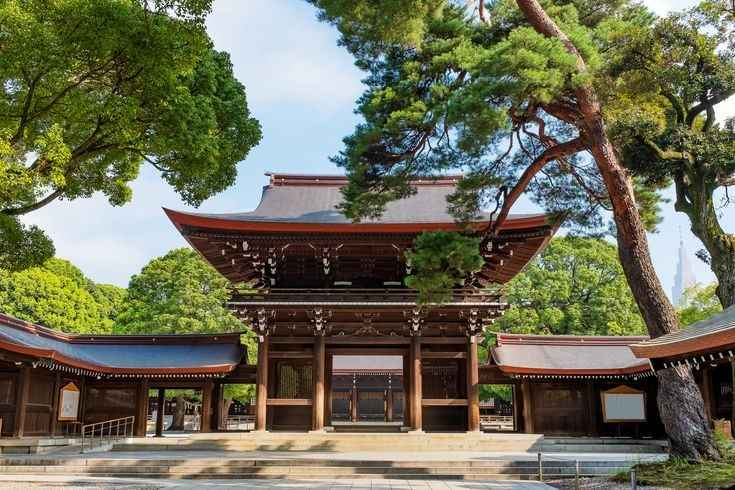

Sanctuaire de Meiji-jingū
 -Notoriété/Histoire: Le sanctuaire Meiji a été achevé en 1920 et est devenu le sanctuaire shinto le plus célèbre du Japon. Le sanctuaire Meiji Jingu est dédié aux âmes de l'empereur Meiji (1852-1912) et de son épouse, l' impératrice Shoken (1849-1914). L'empereur Meiji, âgé de 15 ans, monta sur le trône en 1867 alors que le Japon assistait à la fin violente de plus de 260 ans de règne Tokugawa et que la restauration Meiji (Meiji Isshin) inaugure une période d'industrialisation, d'urbanisation et d'expansion coloniale alors que le Japon commençait à tenter pour rattraper les grandes puissances occidentales.
Après leur mort au début des années 1900, le sanctuaire Meiji Jingu a été construit pour les vénérer. Le sanctuaire Meiji Jingu est devenu un point de rencontre pour les radicaux de droite japonais avant la Seconde Guerre mondiale, au cours de laquelle il a été détruit par les bombardements américains en 1945 et reconstruit grâce à des dons publics en 1958.


Beauté du site: Le sanctuaire est entouré d'une forêt dense, composée de plus de 120 000 arbres représentant environ 365 espèces différentes, tous donnés par le peuple japonais. Cette forêt, en plein cœur de Tokyo, est un véritable havre de paix où il est possible de se ressourcer loin de l'agitation urbaine.
En vous promenant le long des sentiers ombragés, vous passerez sous de majestueux torii (portails traditionnels shintoïstes) avant d'atteindre le sanctuaire principal.
Pour rappel, il ne s'agit pas d'un parc mais bien d'un sanctuaire, il est interdit de fumer, manger, boire (hors des lieux prévus), de crier ou de prendre des photos lorsque des cérémonies sont en cours.
Localisation: Le Meiji-jingū (明治神宮) ou sanctuaire Meiji, est un sanctuaire shintoïste situé en plein cœur de Tokyo, dans l'arrondissement de Shibuya, en bordure du quartier Harajuku.

Facilté d'accès:Pour se rendre au sanctuaire de Meiji, il faut premièrement, aller au Japon car le sanctuaire se trouve dans ce pays. Pour aller au Japon, il faut prendre l’avion, les billets d’avion sont à partir de 413 €. Et atterrir à l'aéroport international de Tokyo-Haneda. Ensuite prendre le train (Tokyo Monorail) jusqu’à l'arrêt Monorail Hamamatsuchō, puis, changer de transport, prendre le train à l'arrêt Daimon, puis aller à Yoyogi. Au total, le temps de trajet est de 38 min (s' il n’y a pas de perturbations sur les transports). Le prix du train coûte entre 3 et 4€. Et le prix du métro coûte entre 1 et 2 €. Une fois arrivé à l'arrêt, il suffit de suivre le gps et vous en aurez pour 15 min à pied.

Nombre annuel de visite: Près de trois millions de visiteurs affluent chaque année.